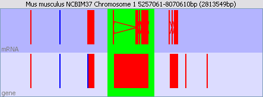
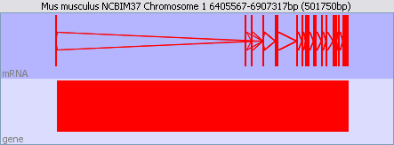

Much of your time working with SeqMonk will be spent moving around the chromosome view. There are a simple set of movement controls performed using the mouse which allow you to quickly find your region of interest and show the information you want to see.
Zooming is usually performed using the mouse. To zoom into a region simply click and drag the mouse over the area you want to see. As you drag you will see a green box appear on the display, and when you release the mouse this green region will be expanded to fill the entire view.
When you drag a green box appears

And when you release, the green shaded area is expanded to fill the whole view

To zoom out simply press the right mouse button (apple+click on a mac). The view will expand to show you twice as much sequence as you could see before.
Often the easiest way to move laterally along a chromosome is to zoom out and then select the new region you want to see. Alternatively you can drag the scroll bar which appears under the chromosome to quickly scan along the current region.
If you prefer to use the keyboard to move around the genome you can do this. The available keyboard shortcuts are:
To change chromosome simply click on the chromosome you want to view in the genome view. The chromosome view will change to show the region you clicked on. You can also use this method to quickly jump to a different region of the same chromosome.